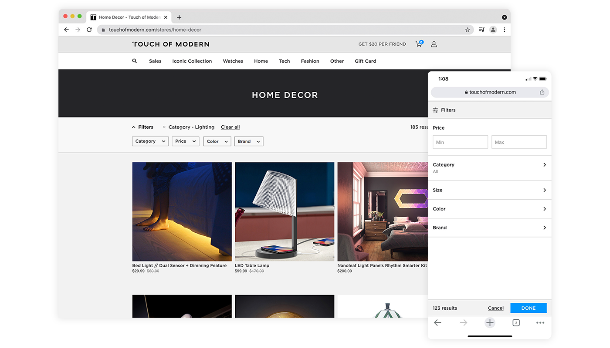

TOMO Store Filters
Overview
At Touch of Modern (TOMO), an e-commerce website for modern men, we offer products that are organized into categories, called stores, which then have filter features to help customers further narrow their search. Although it works decently, the filter has not been updated for years and has many limitations.
The goal of this project was to revamp the design of the filter.
Responsibilities: User Research, Prototyping, Interaction Design, Visual Design, Quality Assurance Testing
 01. Research & Analysis
01. Research & Analysis
üòü Problems with the Current Filter
To further understand why the current filter was not ideal, I took a look at the existing filter with the stakeholder and found the following main issue:
- The design language is outdated.
- Current layout only allows two filter options (i.e. Category and Price)
- Draws too much attention away from the listed products.
✨ Opportunities to Improve
To revamp the filter, I planned to improve the following:
- Create a modern-looking design that allows for a more intuitive and extensive experience
- Provide users with a smooth browsing experience without sacrificing product attention
02. Design
üìÉ Initial Design
Because this was an unfinished project passed on from another designer, the foundation of the filter had already been set. Below is the low-fidelity prototype with the overall structure and main functions of the filter.
✏️ Revised Design
After reviewing the existing low-fidelity prototype and doing some research, I had a better sense of best practices for filter feature implementation. Here are some main changes I made:
- Reduce the filter bar size. When scrolling down, it should collapse so it doesn’t take up unnecessary space.
- Include more hierarchical categorization.
- Add a brand filter, giving users the ability to search for and easily scroll through what can be a lengthy list of brands.
- Limit the number of colors from ~50 to ~20.
üòä Final Design
After carefully reviewing the prototypes again with the stakeholders, one major change we made was redesigning the mobile web version to display each filter on separate screens. Displaying all filter categories and their dropdowns on the same page was not ideal since some filters could have an enormously long list to scroll through.
Here’s a glimpse of the final product:


{kind=link}
{kind=link}
{kind=link}
 03. Quality Assurance
03. Quality Assurance
üìù Quality Assurance Document
The engineers and I conducted a few rounds of QA to ensure that the filter looked and functioned the way it should. I also created an Excel sheet to track bugs and issues along with potential fixes. Finally, we tested the filter internally to ensure that everything worked.

 04. Results + Takeaways
04. Results + Takeaways
üìä Results
- We ran an A/B test on the old filter and the new filter. We found that it did not do worse but it did not do significantly better.
- Although it did not improve performance, the layout worked better with the rest of our site. Thus, the stakeholders decided it was best to turn it on for 100% of the users.
üí° Lessons Learned
- Always check, test, and iterate. There will always be some edge cases that you missed initially.
- It is good practice to ask for opinions from different people. You might think your current solution is the best but there might be an even better approach.
üìÖ Future Plans
- Add multi-select for categories within each store.
- Expand the filter feature to other sections of the site, like our sales page.
- Add a sort-by feature as a category in the filter feature.